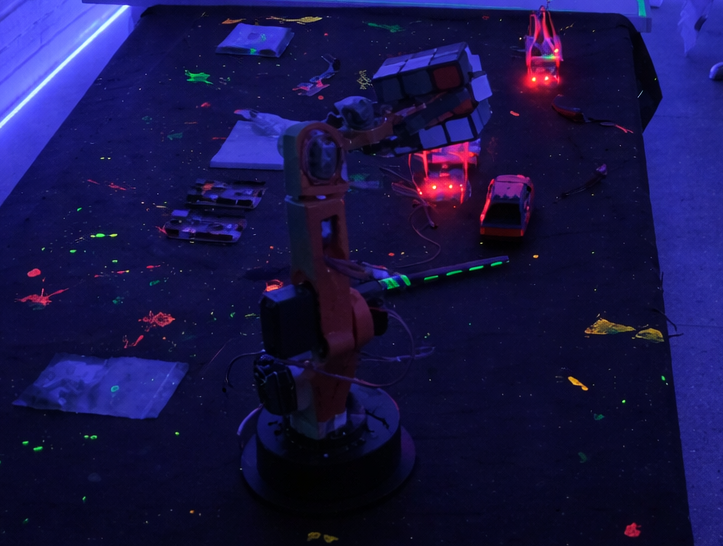
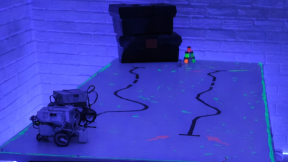
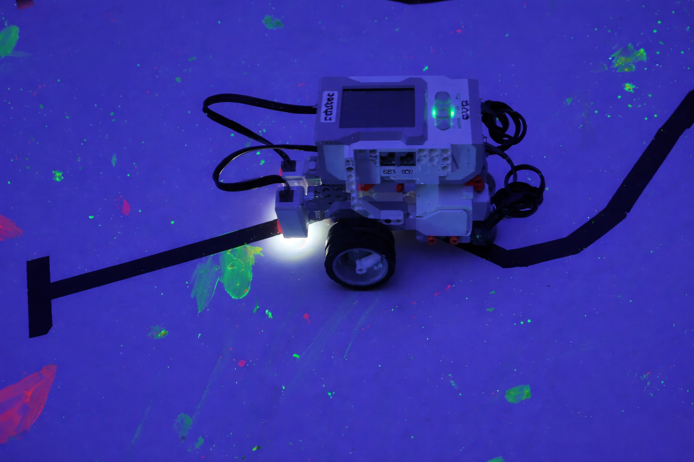

O projeto de robótica criado pelo professor Aluísio foi desenvolvido com o objetivo de incentivar mais meninas a se interessarem pela área da tecnologia. Como muitas vezes as áreas tecnológicas ainda têm maior participação masculina, a ideia foi formar uma equipe composta apenas por garotas, criando um ambiente onde elas se sintam mais confiantes para aprender e desenvolver novas habilidades. No projeto, as alunas aprendem sobre programação, eletrônica e construção de robôs, trabalhando juntas para criar soluções e se preparar para desafios tecnológicos. A equipe também participa de competições, como a Olimpíada Brasileira de Robótica, onde podem colocar em prática o que aprenderam. Mais do que apenas competir, o projeto busca mostrar que as meninas também têm grande potencial na tecnologia, incentivando-as a explorar esse campo e considerar carreiras nas áreas de ciência e inovação.




Participação na Feira do Conhecimento com o projeto Meninas na Robótica.